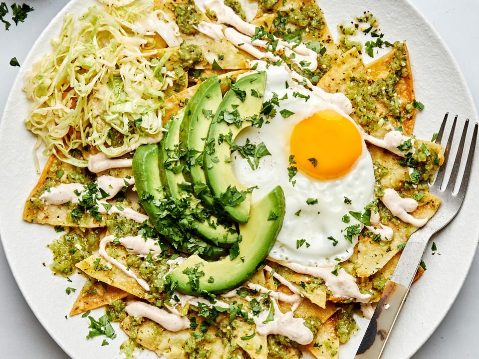

Chilaquiles
This delicious authentic chilaquiles recipe was passed down my own family and is always finger licking good.
Ingredients
- 12 Corn Tortillas, cut into wedges or squares
- 2 Tablespoons of Vegetable Oil
- 1 Cup of Salsa (red or green, whichever you prefer)
- 1/2 Cup of Chicken Broth(optional, for a saucier version)
- Salt, to taste
- 1 Cup of Cooked Shredded Chicken or Beef(optional)
- 1/4 Cup of Cumbled Queso Fresco or Shredded Monterey Jack Cheese
- Chopped Fresh Cilantro, for garnish
- Diced Avocado, Sliced Jalapenos, and Sour Cream, for serving(optional)
Instructions
- Preheat your oven to 375°F (190°C). Spread the tortilla wedges or squares on a baking sheet in a single layer. Bake for about 10-12 minutes or until they are crispy and lightly golden. Remove from the oven and set aside.
- In a large skillet, heat the vegetable oil over medium heat. Add the Salsa and cook for about 3-4 minutes, stirring occasionally.
- Optional: If you prefer a saucier version, add the chicken broth to the skillet and stir well to combine with the salsa. Season with salt to taste.
- Add the baked tortilla chips to the skillet and toss gently to coat them evenly with the salsa mixture. Cook for an additional 2-3 minutes, allowing the chips to soften slightly in the sauce.
- If using, add the cooked shredded chicken or beef to the skillet and stir to incorporate it into the chilaquiles.
- Remove the skillet from heat and sprinkle the crumbled queso fresco or shredded Monterey Jack cheese over the chilaquiles. The residual heat will melt the cheese.
- Garnish with chopped fresh cilantro
- Serve the chilaquiles hot with optional toppings such as diced avocado, sliced jalapenos, and sour cream on the side.
Chilaquiles can be enjoyed as a breakfst or brunch dish, and its often served with fried or scrambled eggs. It's a versatile recipe, so feel free to customize it with your favorite toppings and enjoy this flavorful Mexican dish!
Back to the top